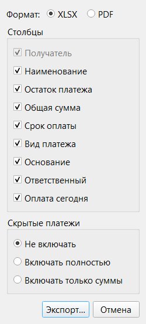
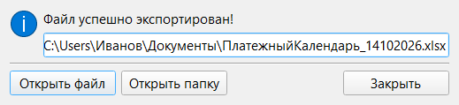

Раздел 11. Экспорт |
Экспорт сохраняет таблицу платежей в файл Excel (XLSX) или PDF, например чтобы отправить коллегам (кнопка «Экспорт», Ctrl+E).
Что попадает в файл |
В файл попадает таблица в том виде, в каком она на экране: с учётом фильтров, поиска, сортировки, кнопки «На контроле», срока показа оплаченных платежей, «Заголовков разделов» и «Итого по разделам». Итоги считаются по вошедшим платежам, поэтому перед экспортом проверьте фильтры.
Суммы в XLSX записаны числами, их можно складывать в Excel.
Окно «Экспорт в файл» |

Рис. 32. Окно «Экспорт в файл».
| Элемент | Что важно |
|---|---|
| Формат | PDF доступен, только если на компьютере установлен Microsoft Excel (PDF делается через него). Выбранный формат запоминается |
| Столбцы | Сначала отмечены столбцы, видимые в таблице; выбор действует только на этот экспорт. «Получатель» отключить нельзя. При пункте «Оплаченные» столбец «Остаток платежа» не отмечен: отметьте его, если он нужен |
| Скрытые платежи | См. ниже |
Что делать с платежами, отмеченными как «Скрытый платеж» (раздел 3):
| Вариант | Что будет в файле | Итоги |
|---|---|---|
| «Не включать» | Скрытых платежей нет | Без скрытых платежей |
| «Включать полностью» | Скрытые платежи как обычные | Со скрытыми платежами |
| «Включать только суммы» | Строки скрытых платежей без текста, остаются только суммы | Со скрытыми платежами |
|
⚠️ Внимание. По умолчанию выбрано «Не включать», поэтому итоги в файле могут быть меньше итогов в таблице: в таблице скрытые платежи видны всегда и входят в итоги. |
Сохранение |
После «Экспорт…» программа спрашивает, куда сохранить файл. Имя по умолчанию — «ПлатежныйКалендарь_ДДММГГГГ»; папка — прошлая, а при первом экспорте — export внутри data (приложение 2). Существующий файл перезаписывается после подтверждения.
После успешного экспорта окно «Экспорт завершен» предлагает открыть файл или папку.

Рис. 33. Окно «Экспорт завершен».
Закрепление заголовка |
Шапка XLSX-файла (четыре верхние строки) остаётся на месте при прокрутке, пока включено «Настройки» → «Таблица» → «Экспорт таблицы» → «Закреплять заголовочную часть в XLSX-файле» (по умолчанию включено). В PDF настройка не действует.
|
🍎 macOS: PDF создаётся через Excel; при первом экспорте macOS спросит разрешение управлять «Microsoft Excel» (приложение 2, «Особенности macOS»). «Открыть папку» показывает файл в Finder. |
Что может пойти не так |
| Что вы видите | Что случилось | Что делать |
|---|---|---|
| Переключатель PDF неактивен, подсказка «Для экспорта в PDF требуется установленный Microsoft Excel» | Excel не найден | Сохраните XLSX и преобразуйте его в PDF сами либо установите Excel |
| «Не удалось записать файл. Возможно, файл с таким же именем используется другим приложением или в настройках указан неверный путь» | Excel не смог создать PDF | Закройте PDF с таким именем в других программах или выберите другое имя или папку |
| «Во время записи, переноса или удаления файлов произошла ошибка (см. подробности в логе)» | Файл не удалось сохранить. Частая причина — файл с таким именем открыт в Excel или нет прав на папку. Точный текст ошибки виден по кнопке «Показать подробности…» | Закройте файл в других программах или выберите другую папку |
| «Превышено время ожидания экспорта в PDF через Microsoft Excel», «Не удалось запустить osascript» или «Не удалось записать PDF-файл через Microsoft Excel…» (macOS) | Excel не ответил или не получил разрешения | Проверьте разрешение «Автоматизация» (приложение 2) и повторите; либо сохраните XLSX |
| «Не удалось открыть файл» или «Не удалось открыть папку: …» | На компьютере нет программы для такого файла либо файл или папка уже удалены | Откройте файл вручную по пути из окна «Экспорт завершен» |